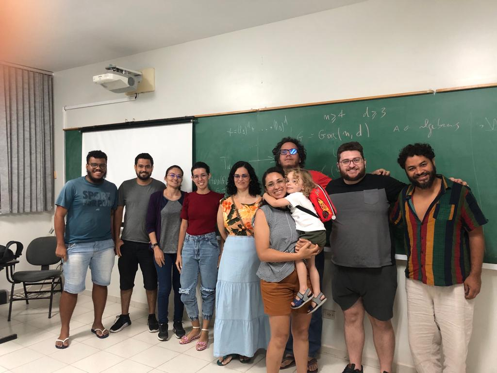

Onde tudo começou. A primeira Jornada nasceu de uma iniciativa de Aline V. Andrade, Charles Almeida e Rodrigo Gondim, reunindo em Recife, Pernambuco, um pequeno grupo de pesquisadores e estudantes em torno das propriedades de Lefschetz. Da sala de aula da primeira edição à comunidade que o evento reúne hoje, o crescimento fala por si.
Lista de palestras em preparação.